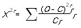
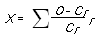
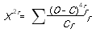
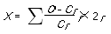

종자기사 (2006-03-05 기출문제)
1과목: 종자생산학
1. 다음 중 세균병원병균의 혈청학적 검정방법이 아닌 것은?
- 면역이중확산법
- 괴경지표법
- 형광항체법
- 효소결합항체법
(정답률: 알수없음)

2. 다음 수분의 종류 중 종자수분의 형태에 속하지 않는 것은?
- 결합수
- 흡착수
- 중력수
- 유리수
(정답률: 알수없음)
3. 종자의 저장조건에 대한 설명으로 옳은 것은?
- 종자 저장 중 균의 활동에 필요한 상대습도 범위 65~70%에 상응하는 전분종자의 평형수분함량은 10%이다.
- 종자 저장 중 균의 활동에 필요한 상대습도 범위 65~70%에 상응하는 전분종자의 평형수분함량은 14%이다.
- 종자 저장 중 균의 활동에 필요한 상대습도 범위 65~70%에 상응하는 유료종자의 평형수분함량은 18%이다.
- 종자 저장 중 균의 활동에 필요한 상대습도 범위 65~70%에 상응하는 유류종자의 평형수분함량은 12%이다
(정답률: 알수없음)
4. 식물생장조절제 중 오이에서 숫꽃(雄花)의 비율을 증가시키는 것은?
- NAA
- Auxin
- CCC
- Gibberellin
(정답률: 알수없음)
5. 다음 중 종자에 배유가 있는 식물은?
- 배추
- 호박
- 고추
- 양파
(정답률: 알수없음)
6. 종자 발아시 활성을 갖는 주요 가수분해 효소는?
- 아밀라제
- 아미노산
- 만노스
- 포도당
(정답률: 알수없음)
7. 종자의 순도분석은 채취한 종자시료에 대하여 정립(순종자, 순결종자), 이종종자, 협잡물(이물)의 중량 구성비를 검정하는 일이다. 이 때 정립 (순종자, 순결종자)에 해당하는 것은
- 해당 작물의 완전한 종자
- 해당 작물의 종자로서 미숙립과 병해립 포함
- 해당 품종의 완전한 종자
- 해당 품종으로서 완전한 종자무게의 90% 이상의 무게를 가진 종자
(정답률: 알수없음)
8. F1 개체는 화분이 생기지 않고 항상 불임의 F1 종자만이 생산되어 종실이 수확대상이 되는 작물에서는 이용할 수 없고, 영양체를 이용하는 사료용 유체나 양파에서는 실용화 될 수 있는 웅성불임법은?
- 유전자적 웅성불임
- 세포질적 웅성불임
- 세포질적-유전자적 웅성불임
- 3가지 방법 모두 가능하다
(정답률: 알수없음)
9. 감자의 종자검사에서 싹튼 감자의 기준은?
- 눈이 1mm 정도 자란 것
- 눈이 3mm 정도 자란 것
- 눈이 4mm 이상 자란 것
- 눈이 5mm 이상 자란 것
(정답률: 알수없음)
10. 다음 중 종자 제출시료를 추출하는데 쓰이는 기구는?
- 토양균분기
- 표본추출봉
- 원심분리형 균분기
- 격자형 균분기
(정답률: 알수없음)
11. 일반적인 작물의 화아분아 촉진에 가장 영향이 큰 것은?
- 온도-일장
- 수분-질소
- 온도-습도
- 습도-일장
(정답률: 알수없음)
12. 작물 종류와 채종 양식이 알맞게 연결된 것은?
- 우엉 - 방임채종에 의한 고정종
- 오이 - 숫그루 제거에 의한 교배종
- 가지 - 웅성불임성을 이용한 교배종
- 당근 - 자가불화합성을 이용한 교배종
(정답률: 알수없음)
13. 옥수수(교잡종)의 원원종, 원종의 자식계통 및 채종용 교잡종은 이품종으로 부터 얼마나 격리되어야 하는가? (단, 건물 또는 산림 등의 보호물이 있을 경우는 제외)
- 100m
- 200m
- 400m
- 800m
(정답률: 알수없음)
14. 종자퇴화의 증상이 아닌 것은?
- 발아율 및 생장발육의 감퇴
- 효소활성의 증대
- 유묘의 불량환경 저항성 증가
- 종자 침출액의 증가
(정답률: 알수없음)
15. 종자의 발아세를 높일 수 있는 방법이 되지 못하는 것은?
- 프라이밍 처리
- 테트라졸륨액 처리
- 저온 처리
- 지베렐린액 처리
(정답률: 알수없음)
16. 옥수수의 채종 포장으로서 가장 알맞은 곳은?
- 지리적으로 격리된 보장
- 다년간 옥수수 연작지
- 재배관리가 편리한 도시근교
- 고품질 옥수수의 집단재배 포장
(정답률: 알수없음)
17. 배(胚) 휴면을 하는 종자의 경우 물리적 휴면 타파법으로 가장 효과적인 것은?
- 저온 습윤 처리
- 고온 습윤 처리
- 저온 건조 처리
- 고온 건조 처리
(정답률: 알수없음)
18. 종자 발아 성능검사에 이용되고 있는 테트라졸륨 검사의 가장 큰 단점은?
- 소량 검정이 어렵다
- 시간이 많이 소요된다
- 검사장치가 복잡하다
- 결과 해석에 경험을 요한다
(정답률: 알수없음)
19. 채소작물 채종에서 웅성불임 개체를 찾으려고 노력하는 이유는?
- 재배하기 쉽다.
- 교배작업을 생략할 수 있다.
- 병해충에 강하기 때문이다.
- 과실당 채종량을 높일 수 있기 때문
(정답률: 알수없음)
20. 종자에 프라이밍(Priming) 처리시 가장 적합한 온도는?
- 5℃
- 10℃
- 17℃
- 35℃
(정답률: 알수없음)
2과목: 식물육종학
21. 종속간 교잡을 하면 수정이 되더라도 배가 완전 발육을 못하고 중도에서 정지되거나 또는 배유의 발육불량으로 종자가 발아하지 못한다. 이러한 경우 잡종을 얻을 수 있는 방법은?
- 배배양
- 저온처리
- 고온처리
- 오옥신처리
(정답률: 91%)
22. 육종목표를 결정할 때 가장 우선적으로 고려해야 할 것은?
- 현 재배품종의 장-단점 및 보급 상황
- 개화기의 조절방법
- 재배품종의 게놈분석
- 재배품종의 방사선 감수성
(정답률: 50%)
23. 잡종집단에서 선발효율을 높이고자 할 때 이용할 수 있는 분자표지는?
- 켈루스 형성 여부
- 히스톤 단백질 함량
- RFLP 표지
- 폴리펩티드 신장
(정답률: 알수없음)
24. 유전변이를 확대시키고자 종이 다른 식물의 세포를 융합 할 경우 나타나는 문제점은?
- 모든 식물세포의 genome간에 친화성이 있다
- 융합이 가능한 식물의 범위가 매우 넓다
- 바람직한 유전자만을 도입 할 수 있다.
- 육종목표가 되는 형질만을 지닌 융합세포를 선발하기 어렵다.
(정답률: 알수없음)
25. F2의 분리비를 보고 독립유전을 하는 것인지, 연관 관계가 잇는 것인지를 알기 위한 검정을 하는 식은? (단. O=관찰된 수, C=이론수)




(정답률: 알수없음)
26. 다음 중 유전적 취약성(genetic vulnerablilty)에 관한 설명으로 가장 알맞은 것은?
- 품종의 단순화에 의해 작물재배가 환경스트레스에 견디지 못하는 성질
- 품종개량에 있어서 종내의 유전적 변이의 폭이 좁아서 육종에 기여하지 못하는 성질
- 식물 기원지에서 떨어진 곳에서는 다양한 유적적 변이를 기대할 수 없는 현상
- 유전형질이 충분히 표현될 수 잇는 환경조성이 이루어지지 않았을 때 일어나는 현상
(정답률: 알수없음)
27. 다음 중 유전적 변이를 감별하는 방법으로 가장 알맞은 방법은?
- 유의성 감정
- 후대검정
- 전체 형성능(totipotency) 검정
- 질소 이용율 검정
(정답률: 알수없음)
28. 삼성잡종의 F2 세대의 분리비 검정의 최소집단의 크기는?
- 8
- 16
- 27
- 64
(정답률: 알수없음)
29. 다음 중 형태적 형질에 해당하는 것은?
- 식미(食味)
- 저장성
- 휴면 발아성
- 종피색(種皮色)
(정답률: 알수없음)
30. 세포질-유전자적 웅성불임성을 이용하여 옥수수 1대 잡종종자를 대량으로 채종하기 위해서 육종가 또는 육종기관은 어떤 종류의 계통을 유지하고 있어야 하는가?
- 웅성불임계통, 내충성게통, 근동질유전자계통
- 근동질유전자계통, 웅성불임유지계통, 다수성계통
- 내충성계통, 다수성계통, 임성회복유전자계통
- 임성회복유전자계통, 웅성불임유지계통, 웅성불임계통
(정답률: 알수없음)
31. 인위적으로 만든 동질배수체의 특성에 관한 설명 중 옳지 않은 것은?
- 핵과 세포가 커진다.
- 영양기관의 생육이 증진된다
- 착과성이 감퇴된다.
- 성숙기가 빨라진다.
(정답률: 알수없음)
32. 작물의 육종시 순계분리법이 가장 효과적인 경우는?
- 자식성인 수집 재래종의 개량
- 타가수정으로 근교약세인 수집 재래종의 개량
- 타가수정의 영양번식 작물 개량
- 인공교배에 의한 품종 개량
(정답률: 64%)
33. 중복수정에 관한 기술 중 옳지 않은 것은?
- 염색체가 3n인 배유를 갖는다.
- 여러 종의 꽃가루가 이중으로 암술머리에 수분된 것이다.
- 속씨식물에서 볼 수 잇느 수정을 말한다.
- 두개의 웅핵이 배낭 내에서 이중으로 수정되는 것을 말한다.
(정답률: 알수없음)
34. 계통육종법에서 계통재배를 처음 시작하는 세대는?
- F2
- F3
- F4
- F5
(정답률: 알수없음)
35. 이형접합인 동질 4배체 식물을 자가수분했을 때 이형접합인 한 2배체를 자가수분시킨 자손보다 열성(劣性) 표현형 개체의 출현 비율은 어떻게 나타나는가?
- 적어진다
- 많아진다
- 같아진다
- 변함이 없다
(정답률: 알수없음)
36. 조합능력을 추정하는 방법으로 생물통계적 수단이 취해지고 있는 것은?
- 단교잡검정법
- 여교잡검정법
- 이면교잡에 의한 검정
- 톱교잡검정법
(정답률: 알수없음)
37. 육종상에서 반수체를 이용시 장점으로 옳은 것은?
- 잡종집단의 유전적 조성이 다양해 진다.
- 유전적으로 고정된 순계를 빨리 얻을 수 있어 육종기간이 단축된다.
- 양적형질의 개량에 가장 효율적인 방법이다.
- 식물체의 생육이 왕성해지며 그 자체의 불임성이 낮아진다.
(정답률: 64%)
38. 자가불화합성을 지닌 작물에 있어서 불화합성을 타파하여 자식종자를 생산할 수 있는 방법에 속하지 않는 것은?
- 뇌수분
- 일장처리
- 탄산가스처리
- 노화(老化)수분
(정답률: 67%)
39. 교잡육종의 분리초기 세대에서는 소수의 주동유전자가 지배하는 조만성(早晩性), 내병성(耐病性) 등을 선발하고 F6 이후에 양적형질(量的形質)을 대상으로 선발하는 육종방식은?
- 계통육종법
- 집단육종법
- 파생계통육종법
- 다계교잡법
(정답률: 알수없음)
40. 유전적으로 헤테로인 F1 품종의 균등성과 영속성을 유지해가기 위한 실용적인 방법으로 가장 적당한 것은?
- 양친 품종의 균등성과 영속성을 유지시킴
- F2에서 F1과 똑같은 특성을 가진 개체를 선발함
- 방사선 조사에 의하여 돌연변이를 유발함
- 염색체 배가를 시킴
(정답률: 알수없음)
3과목: 재배원론
41. 다음 중 대용작물(大用作物, emergency crops)에 해당하는 것은?
- 옥수수, 수수
- 호밀, 콩
- 조, 피, 기장, 메밀, 고구마
- 조, 메밀, 채소, 팥
(정답률: 0%)
42. 답전윤환재배를 실시하는경우 나타나는 효과중 가장 관계가 없는 것은?
- 토양 입단화의 증대
- 지력의 증진
- 토양 부식의 집적
- 환원성 유해물질의 억제
(정답률: 알수없음)
43. 다음 설명중 가장 옳은 설명한 것은?
- 토양 공극 내에서 중력에 저항하여 유지되는 수분을 중력수라고 한다.
- 증발을 방지하면서 중력수를 완전히 배제한 상태를 최대용수량이라고 한다.
- 젖은 토양에 중력의 1,000배의 원심력을 작용시켜 잔류하는 수분 상태를 수분당량이라고 한다.
- 토양수분의 함량을 건토에 대한 수분의 중량비로 표시하는 것을 토양수분장력이라고 한다.
(정답률: 알수없음)
44. 화곡류의 잎을 일어서게 하여 수광태세를 가장 좋게 하며 증산을 경감하여 한해를 더는 등의 효과를 가진 성분은?
- 질소
- 규소
- 망간
- 칼슘
(정답률: 알수없음)
45. 배추과(십자화과) 작물의 성숙과정으로 맞는 것은?
- 녹숙-백숙-갈숙-고숙
- 백숙-녹숙-갈숙-고숙
- 녹숙-백숙-고숙-갈술
- 백숙-녹숙-고숙-갈숙
(정답률: 알수없음)
46. 식물체 수분포텐셜 성분을 측정하는 방법이 아닌 것은?
- 가압상법
- 중성자 산란법
- Chardakov's 법
- 노점식 방법 (증기압 측정법)
(정답률: 알수없음)
47. 유랑화전농법(流浪火田農法)에 대한 설명이 바른 것은?
- 동양에서 가장 오래된 농경방식이다
- 휴경과 경작을 교대로 재배하는 경작방법이다
- 정착하여 화전을 개척하는 경작방식이다.
- 시비법이 발달한 경작방식이다.
(정답률: 알수없음)
48. 연작에 의해서 나타나는 기지(忌地)현상의 원인이 아닌 것은?
- 토양 비료분의 소모
- 염류의 감소
- 토양 선충의 번성
- 잡초의 번성
(정답률: 알수없음)
49. 요소 0.6g이 증류수 1L에 용해되어 있을 경우 이 용액의 농도는? (단, 요소 분자량은 60 이다.)
- 0.01M
- 0.01%
- 0.06M
- 0.6%
(정답률: 알수없음)
50. 방사선 동위원소를 추적자로서 이용하지 않는 것은?
- 42K - 영양생리의 연구
- 14C - 광합성의 연구
- 24Na - 농업토목에 이용
- 60Co - 식품 저장에 이용
(정답률: 알수없음)
51. (NH4)2SO4의 질소 성분 함량은? (단, N-14, H=1, S=32, O=16이다.)
- 21%
- 27%
- 37%
- 46%
(정답률: 알수없음)
52. 작물의 생육적온을 넘어서 최고온도에 가까운 온도가 오래 지속되면 작물생육이 쇠퇴하여 고온의 장해(열해, 熱害, heat injury)가 발생하는데, 그 주요 원인을 잘못 설명한 것은?
- 고온에서 광합성이 호흡작용보다 우세하여 유기물 소모가 많아 작물이 피해를 입는다.
- 고온에서 단백질의 합성이 저해되고, 암모니아이 축적이 많아 작물이 고사한다.
- 고온에 의해서 철분이 침전되면 황백화현상(黃白化現象)이 일어난다.
- 수분 흡수보다 증산이 증대되어 위조(萎凋)를 유발한다.
(정답률: 알수없음)
53. 다음 중 생장억제물질(Growth retardant, Dwarfing chemical)이 아닌 것은?
- Phosfon-D
- CCC
- BNOA
- Amo-1618
(정답률: 알수없음)
54. 벼의 직파재배에서 가장 중요한 품종적 특성은?
- 저온발아성
- 묘대일수 감응도
- 추락저항성
- 내비성
(정답률: 알수없음)
55. 작부체계에서 기지현상이 문제시 되지 않는 과수류(果樹類)는?
- 감귤류
- 복숭아나무
- 사과나무
- 앵두나무
(정답률: 알수없음)
56. 재배조건과 T/R율과의 관계가 옳지 않은 것으?
- 일사량이 부족하면 T/R율이 증대함
- 질소 다비재배는 T/R율이 증대함
- 토양수분이 부족하면 T/R율이 증대함
- 토양 통기가 나쁘면 T/R율이 증대함
(정답률: 알수없음)
57. 다음 토양 미생물 중 자급 영양 세균은?
- Azotomonas
- Rhizobium
- Notrobacter
- Clostridium
(정답률: 알수없음)
58. 각 무기성분의 산화와 환원 형태가 잘못된 것은?(순서대로 산화형, 환원형)
- S : SO4, H2S
- N : NO3, NH4
- C : CO2, CH4
- Fe : Fe++, Fe+++
(정답률: 알수없음)
59. 식물의 양분이 무기물이라는 견지에서 무기영양설을 제창한 학자는?
- ARISTOTLE
- THALES
- MORGAN
- LIEBIG
(정답률: 알수없음)
60. 수해(水害)에 관한 다음 설명 중 맞지 않는 것은?
- 벼에서 수잉기 ~ 출수개화기에는 수해에 매우 약하다.
- 벼에서 7일 이상이 관수될 대에는 다른 작물 파종의 필요성이 있다.
- 벼의 청고현상은 수온이 낮은 유동 청수(淸水)에서 볼 수 있는 현상이다
- 질소질 비료를 많이 주면 탄수화물의 함량이 적어지고 호흡작용이 왕성하여 관수해가 더 커진다.
(정답률: 알수없음)
4과목: 식물보호학
61. 나무의 가지에 발생하여 많은 검은색 소립이 형성되고 병든 껍질을 벗기면 알코올 냄새가 나는 증상을 보이는 병은?
- 사과 겹무늬썩음병
- 배나무 검은별무늬병
- 사과나무 부란병
- 과수 근두암종병
(정답률: 알수없음)
62. 농약 사용에 의한 포장에서의 저항성균 대책이 아닌 것은?
- 약제 사용 횟수를 줄인다.
- 동일 작용 기작 계통의 약제 연속 사용을 피한다.
- 동일 약제를 연속 사용한다.
- 다른 계통의 약제를 혼용하여 사용한다.
(정답률: 알수없음)
63. 곤충의 행위를 온도에 민감한 순서로 바르게 나열한 것은?
- 생존＞생식＞발육＞운동
- 생식＞발육＞운동＞생존
- 생존＞발육＞운동＞생식
- 운동＞발육＞생식＞생존
(정답률: 알수없음)
64. 냉온에 의해 작물의 생육에 장애가 생기는 생리적 원인이 아닌 것은?
- 호흡 과다
- 단백질의 과잉 분해
- 생리적 기능 저하
- 토양 pH
(정답률: 알수없음)
65. 벼오갈병의 병원균을 매개하는 곤충은?
- 벼멸구
- 흰등멸구
- 애멸구
- 끝동매미충
(정답률: 60%)
66. 우리나라에 발생하지 않으므로 외국으로부터의 침입을 막고자 식물 검역 대상 병으로 지정디어 있는 배나무의 병해는?
- 검은무늬병
- 화상병
- 검은별무늬병
- 붉은별무늬병
(정답률: 알수없음)
67. 식물병과 환경과의 관계를 설명한 것으로 틀린 것은?
- 벼 도열병의 잠복기는 기온과 밀접한 관계가 있다.
- 배추 무사마귀병은 pH7.0 이상의 토양에서 많이 발생한다.
- 감자 더뎅이병은 알카리성 토양에서 많이 발생한다.
- 밀 모썩음병(G. zea)은 24~28℃ 토양에서 많이 발생한다.
(정답률: 19%)
68. 농약 일변도 사용으로 인하여 생기는 문제점이 아닌 것은?
- 생물상의 평형이 파괴되어 단순화된다.
- 잠재 곤충이 중요 해충화 된다.
- 잔류 독에 의한 환경오염이 유발될 우려가 있다.
- 해충만 방제하므로 천적이 보호된다.
(정답률: 91%)
69. 잡초 종자의 발아에 영향을 주는 요소가 아닌 것은?
- 수분
- 온도
- 광
- 토양 양분
(정답률: 알수없음)
70. 식물 기생 선충에 의한 농작물의 일반적인 피해양상과 거리가 먼 것은?
- 양분을 빼앗기는 현상
- 구침(口針)에 의한 상처와 내부 기상 선충에 의한 조직파괴 및 부패현상
- 생소체에 이상이 오고, 발육기관에 이상이 오는 현상
- 구침을 통해서 분비되는 물질에 의한 생리적 변화 또는 세포의 이상 비대에 의하여 혹이 생기는 현상
(정답률: 알수없음)
71. 25% 농도의 A 유제를 1,000배로 희석해서 10a당 200L를 살포하여 해충을 방제하려고 할 때 유제의 소요량은?
- 100ml
- 200ml
- 300ml
- 400ml
(정답률: 알수없음)
72. 다음 설명한 내용 중 가장 부적당한 것은?
- 식물전염병 발생에 필요한 3가지 조건은 병원균의 병원성, 품정의 저항성, 발병 환경이다.
- 식물병의 외부 징병 진단에서 가장 중요하고 확실한 것은 표징이다.
- 냉해(冷害)는 하계작물에서 하계기온의 저하로 입는 장애를 말한다.
- 질소 과용을 피하고 인산, 칼륨을 충분히 사용하면 내한성이 증가한다.
(정답률: 알수없음)
73. 체중 Kg 당 50% 치사 약량을 표시한 것은?
- LC50
- LD50
- ADI
- WP
(정답률: 알수없음)
74. 단위생식을 하는 곤충은?
- 진딧물(여름형)
- 배추흰나비
- 풍뎅이
- 장님노린재
(정답률: 알수없음)
75. 잡초의 생물적 방제법으로 틀린 것은?
- 상호대립억제작용(allelopathy)은 잡초방제에 장애요소이다.
- 잡초방제에 이용되는 천적은 식해성(食害性) 곤충이어야 한다.
- 식물 병원균은 특성상 수생잡초의 생물적 방제에 이용 가능하다.
- 어패류의 이용은 초종 선택성이 없어 방류제한성이 문제가 된다.
(정답률: 알수없음)
76. 해충의 생물학적 방제의 장점이라고 할 수 없는 것은?
- 환경오염에 대한 위험성이 적다.
- 속효적이며 일시적이다.
- 생물상이 평형을 되찾고 생태계가 안정된다.
- 저항성(내성)이 생기지 않는다.
(정답률: 알수없음)
77. 잡초 방제법 중 생태적 방제에 속하는 것은?
- 열을 이용하여 소각, 소토하는 방법
- 새로운 잡초종의 침입과 오염을 막는 방법
- 곤충, 가축, 미생물 등의 생물을 이용하는 방법
- 피복작물, 부초 및 비닐멀칭을 이용하는 방법
(정답률: 알수없음)
78. 곤충의 피부를 크게 3부분으로 나누는데, 그 중에서 가장 바깥쪽 부분을 무엇이라 하는가?
- 외표피
- 원표피
- 진피세포
- 기저막
(정답률: 알수없음)
79. 식물병의 생물적 방제 관련 설명으로 틀린 것은?
- Siderophore의 이용은 생물적 방제이다.
- 게껍질을 토양에 넣어주면 방선균의 밀도가 증가한다.
- Aflatoxin은 과수 근두암종병 방제에 이용된다.
- 간섭효과를 이용하여 토마토 TMV를 방제한다.
(정답률: 알수없음)
80. 다음 중에서 광엽 잡초는?
- 둑새풀
- 개비름
- 바랭이
- 강아지풀
(정답률: 알수없음)
5과목: 종자관련법규
81. 다음 사항중 품종보호심판위원회의 심판청구 사항이 아닌 것은?
- 보정각하결정에 대하여 불복이 있는 때
- 불량종자 판매로 인한 벌금부과에 대하여 불복이 있는 때
- 거절사정결정에 대하여 불복이 있는 때
- 품종보호의 무효심판청구가 있을 때
(정답률: 알수없음)
82. 다음 중 통상실시권 설정의 재정 청구에 관하여 맞는 것은?
- 농림부장관은 재정을 하고자 할 때 종자위원회의 의견을 들어야 한다.
- 재정에 의한 통상실시권은 기간을 연장할 수 없다.
- 재정을 구두로 이유를 설명한다.
- 재정에 의한 통상실시권의 범위 및 기간은 당사자 간의 협의로 정한다.
(정답률: 알수없음)
83. 품종보호권자의 청구권에 해당되지 않는 것은?
- 품종보호권자의 신용회복청구권
- 권리침해에 대한 금지청구권
- 허위표시의 금지청구권
- 손해배상 청구권
(정답률: 알수없음)
84. 종자산업법의 목적으로 부적합한 것은?
- 주요작물의 품정성능의 관리
- 신품종에 대한 육성자의 권리 보호
- 종자의 생산, 보증
- 주요 농작물 종자법과 종묘관리법의 이원화
(정답률: 29%)
85. 종자산업법 상이 규정에 의한 발아보증시한이 경과 된 종자를 판매 또는 보급한 자에 대한 벌칙은?
- 1년 이하의 징역 또는 1천 만원 이하의 벌금
- 500 만원 이하의 과태료
- 200 만원 이하의 과태료
- 50 만원 이하의 과태료
(정답률: 알수없음)
86. 다음 중 종자관리사 자격기준에 관하여 맞는 것은?
- 국가기술사자격법에 의한 종자기술사 자격취득자로서 종자업무에 1년 이상 종사한 자
- 종자산업기사자격을 취득한 후 종자업무 또는 이와 유사한 업무에 1년 이상 종사한 자.
- 종자업무 또는 이와 유사한 업무에 1년 이상 종사한 자로서 버섯의 경우
- 국가기술자격법에 의한 종자기술사 자격 취득자
(정답률: 알수없음)
87. 다음 중 보증의 유효기간이 틀린 것은?
- 고추 : 2년
- 버섯 : 1개월
- 기타 : 1년
- 감자-고구마 : 1개월
(정답률: 알수없음)
88. 다음 품종보호료에 관한 설명중 옳은 것은?
- 품종보호권에 관한 이해 관계인은 품종보호료를 납부할 수 없다.
- 품종보호권자는 그 품종보호권 존속기간 중에 매년 품종보호료를 납부하여야 한다.
- 품종보호료의 납부기간이 경과한 후에도 1년 이내에 품종보호료를 납부할 수 있다.
- 납부기간이 경과한 후에 품종보호료를 납부할 때에는 당초 품종보호료의 3배에 해당하는 금액을 납부하여야 한다.
(정답률: 알수없음)
89. 다음 중 수입할 때 농림부장관에게 신고하여야 하는 작물의 종자는?
- 호밀 종자
- 고추 종자
- 콩 종자
- 배추종자
(정답률: 알수없음)
90. 품종목록등재대상작물의 사후 관리시험의 검사항목이 아닌 것은?
- 품종의 순도
- 품종의 진위
- 품종의 성능
- 종자전염병
(정답률: 알수없음)
91. 포장검사 및 종자검사 실시요령에서 발아검사시 종이 배지의 pH는 얼마인가?
- pH 5.0~6.0
- pH 6.0~7.5
- pH 7.5~8.5
- pH 8.5~9.5
(정답률: 알수없음)
92. 농촌진흥청 소속의 작물과학원장이 볍씨를 시험-연구목적으로 농림부장관에게 신고하지 않고 수입할 수 있는 양은?
- 품종당 5kg
- 품종당 10kg
- 품종당 15kg
- 품종당 20kg
(정답률: 알수없음)
93. 국가품종목록등재대상작물의 종자를 판매하려고 한다. 어떤 경우 종자보증을 받지 않아도 되는가?
- 종자회사가 감자종자를 판매할 때
- 농협이 보리종자를 판매할 때
- 종자관리소가 보급종 콩을 보급할 때
- 대학에서 연구목적으로 벼 종자를 사용하는 경우
(정답률: 알수없음)
94. 품종보호권 또는 전용실시권을 침해하였을 경우에 해당하는 벌칙은?(관련 규정 개정전 문제로 여기서는 기존 정답인 3번을 누르면 정답 처리됩니다. 자세한 내용은 해설을 참고하세요.)
- 3년 이하의 징역 또는 1천만원 이하의 벌금
- 4년 이하의 지역 또는 2천만원 이하의 벌금
- 5년 이하의 징역 또는 3천만원 이하의 벌금
- 6년 이하의 징역 또는 4천만원 이하의 벌금
(정답률: 알수없음)
95. A씨가 1995년 1월 10일 종자업을 등록한 후 1년 6개월동안 정당한 사유없이 휴업하여 1996년 7월 10일 3개월간 영업정지 처분을 받았다. A씨가 종자업을 다시 등록할 수 있는 시기는?
- 1997년 7월 10일 이후
- 1998년 7월 10일 이후
- 1999년 7월 10일 이후
- 2000년 7월 10일 이후
(정답률: 알수없음)
96. 품종목록 등재 신청품종의 심사에 대한 설명 중 맞지 않는 것은?
- 성능의 심사기준은 대통령령에서 정하고 있다.
- 성능심사기준에 미달한 경우에는 품종목록등재신청을 거절하여야 한다.
- 거절하고자 할 경우는 거절이유를 통지하고 의견서를 제출할 기회를 준다.
- 심사결과 거절이유가 없는 경우 국가품종목록등제에 등재하고 이를 공고한다.
(정답률: 알수없음)
97. 다음 중 국가보증을 받은 것으로 인정할 수 있는 국제종자검정기관이 아닌 것은?
- 국제종자검정협회(ISTA)
- 국제종자검정가협회(AOSA)
- 일본국 농림수산성 식물방역소(감자종자에 한한다.)
- 미국 농무성
(정답률: 알수없음)
98. 벼 400대 소집단에서 총 60개의 1차 시료를 채취하여 모두 혼합하였을 때 이 시료를 무엇이라 하는가?
- 검사시료(Working Sample)
- 제출시료(Submitted Sample)
- 합성시료(Composite Sample)
- 분할시료(Sub Sample)
(정답률: 알수없음)
99. 작물의 품종을 국가품종목록에 등재하고자 하는 자는 신청서를 어디에 제출하여야 하는가?
- 종자관리소장
- 농촌진흥청장
- 작물시험장장
- 국립농산물품질관리원장
(정답률: 알수없음)
100. 다음의 품종 명칭 중 품종 명칭 등록 요건에 맞는 명칭은?
- 무등산수박
- S6109
- 8888
- 우장춘 배추
(정답률: 알수없음)